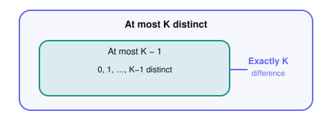
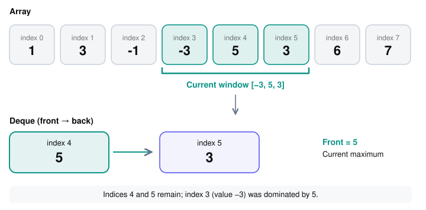
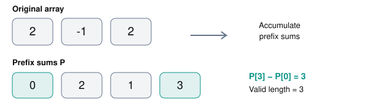

The exercises below are ordered by increasing difficulty.
All array-index ranges use inclusive bounds unless otherwise stated.
Input: nums = [2, 1, 5, 1, 3, 2], k = 3
Output: 9
The best subarray is [5, 1, 3].
Algorithm:
k elements.Time O(n), extra space O(1).
public long maxSumK(int[] nums, int k) {
if (k < 1 || k > nums.length)
throw new AlgorithmException("k must be between 1 and n");
long sum = 0;
for (int i = 0; i < k; i++)
sum += nums[i];
long best = sum;
for (int right = k; right < nums.length; right++) {
sum += nums[right];
sum -= nums[right - k];
best = Math.max(best, sum);
}
return best;
}
public void main() {
int[] nums = {2, 1, 5, 1, 3, 2};
int k = 3;
long sum = maxSumK(nums, k);
Console.draw("Maximum sum of {k} consecutive elements = {sum}");
}Input: [1, 12, -5, -6, 50, 3], k = 4
Output: 12.75
The maximum-sum window is [12, -5, -6, 50], whose sum is 51.
Because every window has exactly k elements, maximizing the average is equivalent to maximizing its sum.
Time O(n), space O(1).
public double maxAverageK(int[] nums, int k) {
if (k < 1 || k > nums.length)
throw new AlgorithmException("k must be between 1 and n");
long sum = 0;
for (int i = 0; i < k; i++)
sum += nums[i];
long best = sum;
for (int right = k; right < nums.length; right++) {
sum += nums[right];
sum -= nums[right - k];
best = Math.max(best, sum);
}
return (double) best / k;
}
public void main() {
int[] nums = {1, 12, -5, -6, 50, 3};
int k = 4;
double average = maxAverageK(nums, k);
Console.draw("Maximum average of {k} consecutive elements = {average}");
}Input: [12, -1, -7, 8, -15, 30, 16, 28], k = 3
Output: [-1, -1, -7, -15, -15, 0]
Use a deque to remember indices of negative numbers. For each window, discard indices outside the window. The oldest remaining negative number is the answer.
Time O(n), space O(k).
public List<Integer> firstNegative(int[] nums, int k) {
if (k < 1 || k > nums.length)
throw new AlgorithmException("k must be between 1 and n");
var result = new ArrayList<Integer>();
var negIndices = new ArrayDeque<Integer>();
for (int right = 0; right < nums.length; right++) {
if (nums[right] < 0)
negIndices.addLast(right);
int left = right - k + 1;
if (left < 0)
continue;
while (!negIndices.isEmpty() && negIndices.peekFirst() < left)
negIndices.removeFirst();
result.add(negIndices.isEmpty() ? 0 : nums[negIndices.peekFirst()]);
}
return result;
}
public void main() {
int[] nums = {12, -1, -7, 8, -15, 30, 16, 28};
int k = 3;
List<Integer> negatives = firstNegative(nums, k);
Console.draw("First negative in each window of {k} = {negatives}");
}Input: [1, 2, 1, 3, 4, 2, 3], k = 4
Output: [3, 4, 4, 3]
Use a frequency map. When an element enters, increase its count; when it exits, decrease its count and remove it if the count reaches zero.
Time O(n) expected with a hash map; space O(k).
public List<Integer> countDistinct(int[] nums, int k) {
if (k < 1 || k > nums.length)
throw new AlgorithmException("k must be between 1 and n");
var freq = new HashMap<Integer, Integer>();
var result = new ArrayList<Integer>();
for (int right = 0; right < nums.length; right++) {
freq.merge(nums[right], 1, Integer::sum);
if (right >= k) {
int outgoing = nums[right - k];
int count = freq.get(outgoing);
if (count == 1)
freq.remove(outgoing);
else
freq.put(outgoing, count - 1);
}
if (right >= k - 1)
result.add(freq.size());
}
return result;
}
public void main() {
int[] nums = {1, 2, 1, 3, 4, 2, 3};
int k = 4;
List<Integer> counts = countDistinct(nums, k);
Console.draw("Distinct values in each window of {k} = {counts}");
}Input: "abciiidef", k = 3
Output: 3
The substring "iii" has three vowels.
Time O(n), space O(1).
public int maxVowels(String s, int k) {
if (k < 1 || k > s.length())
throw new AlgorithmException("k must be between 1 and n");
int vowels = 0;
int best = 0;
for (int right = 0; right < s.length(); right++) {
if (isVowel(s.charAt(right)))
vowels++;
if (right >= k && isVowel(s.charAt(right - k)))
vowels--;
if (right >= k - 1)
best = Math.max(best, vowels);
}
return best;
}
public boolean isVowel(char c) {
return "aeiouAEIOU".indexOf(c) >= 0;
}
public void main() {
String s = "abciiidef";
int k = 3;
int vowels = maxVowels(s, k);
Console.draw("Maximum vowels in a substring of length {k} = {vowels}");
}Input: "WBBWWBBWBW", k = 7
Output: 3
Find a length-k window with the fewest white blocks. Every white block in that window needs recoloring.
Time O(n), space O(1).
public int minimumRecolors(String blocks, int k) {
if (k < 1 || k > blocks.length())
throw new AlgorithmException("k must be between 1 and n");
int white = 0;
int best = Integer.MAX_VALUE;
for (int right = 0; right < blocks.length(); right++) {
if (blocks.charAt(right) == 'W')
white++;
if (right >= k && blocks.charAt(right - k) == 'W')
white--;
if (right >= k - 1)
best = Math.min(best, white);
}
return best;
}
public void main() {
String blocks = "WBBWWBBWBW";
int k = 7;
int recolors = minimumRecolors(blocks, k);
Console.draw("Recolors needed for {k} black blocks in a row = {recolors}");
}You can take exactly k cards from either end of an array.
Input: [1, 2, 3, 4, 5, 6, 1], k = 3
Output: 12
Take the three cards from the right: 5 + 6 + 1.
Key insight: taking k cards from the ends is equivalent to leaving behind one contiguous window of length n-k.
Maximum points=Total sum−Minimum window sum of length n−k
Time O(n), space O(1).
public long maxCardPoints(int[] cards, int k) {
if (k < 0 || k > cards.length)
throw new AlgorithmException("Invalid k");
long total = 0;
for (int x : cards)
total += x;
int windowSize = cards.length - k;
if (windowSize == 0)
return total;
long sum = 0;
for (int i = 0; i < windowSize; i++)
sum += cards[i];
long minWindowSum = sum;
for (int right = windowSize; right < cards.length; right++) {
sum += cards[right];
sum -= cards[right - windowSize];
minWindowSum = Math.min(minWindowSum, sum);
}
return total - minWindowSum;
}
public void main() {
int[] cards = {1, 2, 3, 4, 5, 6, 1};
int k = 3;
long points = maxCardPoints(cards, k);
Console.draw("Maximum points from taking {k} cards = {points}");
}Determine whether two equal values appear within distance k.
Input: [1, 2, 3, 1], k = 3
Output: true
Maintain a set of the previous k elements.
Time O(n) expected, space O(min(n,k)).
public boolean containsNearbyDuplicate(int[] nums, int k) {
if (k <= 0)
return false;
var window = new HashSet<Integer>();
for (int right = 0; right < nums.length; right++) {
if (!window.add(nums[right]))
return true;
if (right >= k)
window.remove(nums[right - k]);
}
return false;
}
public void main() {
int[] nums = {1, 2, 3, 1};
int k = 3;
boolean found = containsNearbyDuplicate(nums, k);
Console.draw("Duplicate within distance {k}: {found}");
}Input: [1, 0, 1, 0, 1]
Output: 1
Let k be the total number of ones. Every valid final group occupies a contiguous window of size k.
The number of swaps required for a candidate window equals the number of zeros inside it, when swapping any two positions is allowed.
Time O(n), space O(1).
public int minSwapsGroupOnes(int[] nums) {
int ones = 0;
for (int x : nums)
if (x == 1)
ones++;
if (ones <= 1)
return 0;
int zeros = 0;
int best = Integer.MAX_VALUE;
for (int right = 0; right < nums.length; right++) {
if (nums[right] == 0)
zeros++;
if (right >= ones && nums[right - ones] == 0)
zeros--;
if (right >= ones - 1)
best = Math.min(best, zeros);
}
return best;
}
public void main() {
int[] nums = {1, 0, 1, 0, 1};
int swaps = minSwapsGroupOnes(nums);
Console.draw("Minimum swaps to group all 1s = {swaps}");
}This is where sliding window becomes especially powerful. Instead of moving the left pointer at the same speed as the right pointer, we move it only when our algorithm's conditions require it.
LeetCode 3: Longest Substring Without Repeating Characters
Input: "abcabcbb"
Output: 3
The substring "abc" contains three unique characters.
Why brute force is inefficient
There are O(n2) substrings. Testing each substring independently for duplicates can lead to O(n3) work in a straightforward implementation.
Optimized strategy
Maintain a map from each character to its most recent index.
If character c has already been seen inside the current window, jump left past the previous occurrence.
left = Math.max(left, lastSeen.get(c) + 1);This means the left pointer never moves backward.
DUPLICATE REMOVAL VISUALIZATION
0
a
1
b
2
c
3
a
4
b
5
c
6
b
7
b
Next character is a, a duplicate.
0
a
1
b
2
c
3
a
4
b
5
c
6
b
7
b
Move left from index 0 to index 1. The resulting window "bca" is valid and has length 3.
Time O(n), extra space O(min(n,alphabet size)).
public int longestUniqueSubstring(String s) {
var lastSeen = new HashMap<Character, Integer>();
int left = 0;
int best = 0;
for (int right = 0; right < s.length(); right++) {
char c = s.charAt(right);
if (lastSeen.containsKey(c))
left = Math.max(left, lastSeen.get(c) + 1);
lastSeen.put(c, right);
best = Math.max(best, right - left + 1);
}
return best;
}
public void main() {
String s = "abcabcbb";
int length = longestUniqueSubstring(s);
Console.draw("Longest substring of {s} without repeats = {length}");
}LeetCode 209: Minimum Size Subarray Sum
Input: target = 7, nums = [2, 3, 1, 2, 4, 3]
Output: 2
The shortest qualifying subarray is [4, 3].
Important assumption: all array elements are positive (a nonnegative variant also works with suitable edge-case handling).
Expand until the sum reaches the target. Then repeatedly shrink and record smaller qualifying windows.
Time O(n), space O(1).
public int minSubArrayLen(int target, int[] nums) {
int left = 0;
long sum = 0;
int best = Integer.MAX_VALUE;
for (int right = 0; right < nums.length; right++) {
sum += nums[right];
while (sum >= target && left <= right) {
best = Math.min(best, right - left + 1);
sum -= nums[left];
left++;
}
}
return best == Integer.MAX_VALUE ? 0 : best;
}
public void main() {
int target = 7;
int[] nums = {2, 3, 1, 2, 4, 3};
int length = minSubArrayLen(target, nums);
Console.draw("Shortest subarray with sum >= {target} = {length}");
}LeetCode 1004: Max Consecutive Ones III
Input: [1,1,1,0,0,0,1,1,1,1,0], k = 2
Output: 6
We may flip at most two zeros. Maintain a window containing at most k zeros.
Time O(n), space O(1).
public int longestOnes(int[] nums, int k) {
if (k < 0)
return 0;
int left = 0;
int zeros = 0;
int best = 0;
for (int right = 0; right < nums.length; right++) {
if (nums[right] == 0)
zeros++;
while (zeros > k) {
if (nums[left] == 0)
zeros--;
left++;
}
best = Math.max(best, right - left + 1);
}
return best;
}
public void main() {
int[] nums = {1, 1, 1, 0, 0, 0, 1, 1, 1, 1, 0};
int k = 2;
int length = longestOnes(nums, k);
Console.draw("Longest run of 1s after flipping {k} zeros = {length}");
}LeetCode 904: Fruit Into Baskets
Input: [1,2,3,2,2]
Output: 4
Find the longest contiguous subarray containing at most two distinct values.
Time O(n) expected, space O(1) because the valid window holds at most two distinct values after shrinking.
public int totalFruit(int[] fruits) {
var freq = new HashMap<Integer, Integer>();
int left = 0;
int best = 0;
for (int right = 0; right < fruits.length; right++) {
freq.merge(fruits[right], 1, Integer::sum);
while (freq.size() > 2) {
int outgoing = fruits[left++];
int count = freq.get(outgoing) - 1;
if (count == 0)
freq.remove(outgoing);
else
freq.put(outgoing, count);
}
best = Math.max(best, right - left + 1);
}
return best;
}
public void main() {
int[] fruits = {1, 2, 3, 2, 2};
int picked = totalFruit(fruits);
Console.draw("Maximum fruits in two baskets = {picked}");
}LeetCode 424: Longest Repeating Character Replacement
Input: "AABABBA", k = 1
Output: 4
We can change at most k characters so the entire window contains one repeated character.
If the window length is len and its most frequent character occurs maxFreq times, then:
Replacements needed=len−maxFreq
A window is valid if:
len−maxFreq≤k
The implementation below deliberately uses a nondecreasing historical maxFreq. This is a valid optimization for the longest-length problem, but maxFreq should not be interpreted as the exact frequency of the current window after shrinking.
Time O(n), space O(1) for uppercase English letters.
public int characterReplacement(String s, int k) {
if (k < 0)
return 0;
var freq = new int[26];
int left = 0;
int maxFreq = 0;
int best = 0;
for (int right = 0; right < s.length(); right++) {
int index = s.charAt(right) - 'A';
freq[index]++;
maxFreq = Math.max(maxFreq, freq[index]);
while (right - left + 1 - maxFreq > k) {
freq[s.charAt(left) - 'A']--;
left++;
}
best = Math.max(best, right - left + 1);
}
return best;
}
public void main() {
String s = "AABABBA";
int k = 1;
int length = characterReplacement(s, k);
Console.draw("Longest same-letter run after {k} replacement = {length}");
}Input: "eceba", k = 2
Output: 3
The longest substring is "ece".
Use a hash map to count the characters currently present.
When the map contains more than k keys, shrink the window until at most k distinct characters remain.
Time O(n) expected.
public int longestKDistinct(String s, int k) {
if (k <= 0)
return 0;
var freq = new HashMap<Character, Integer>();
int left = 0;
int best = 0;
for (int right = 0; right < s.length(); right++) {
char incoming = s.charAt(right);
freq.merge(incoming, 1, Integer::sum);
while (freq.size() > k) {
char outgoing = s.charAt(left++);
int count = freq.get(outgoing) - 1;
if (count == 0)
freq.remove(outgoing);
else
freq.put(outgoing, count);
}
best = Math.max(best, right - left + 1);
}
return best;
}
public void main() {
String s = "eceba";
int k = 2;
int length = longestKDistinct(s, k);
Console.draw("Longest substring with {k} or fewer distinct = {length}");
}LeetCode 1493: Longest Subarray of 1's After Deleting One Element
Input: [1,1,0,1]
Output: 3
Maintain a window containing at most one zero, then subtract one from its length because exactly one element must be deleted.
Time O(n), space O(1).
public int longestAfterDeletingOne(int[] nums) {
int left = 0;
int zeros = 0;
int best = 0;
for (int right = 0; right < nums.length; right++) {
if (nums[right] == 0)
zeros++;
while (zeros > 1) {
if (nums[left] == 0)
zeros--;
left++;
}
best = Math.max(best, right - left);
}
return best;
}
public void main() {
int[] nums = {1, 1, 0, 1};
int length = longestAfterDeletingOne(nums);
Console.draw("Longest run of 1s after deleting one element = {length}");
}LeetCode 713: Subarray Product Less Than K
Input: [10,5,2,6], k = 100
Output: 8
The input must contain strictly positive integers.
For each valid window [left, right], every suffix ending at right is also valid.
Number of valid subarrays ending at right:
countAdded=right−left+1
This counting formula is one of the most important ideas in variable-sized sliding windows.
public long numSubarrayProductLessThanK(int[] nums, long k) {
if (k <= 1)
return 0;
int left = 0;
long product = 1;
long count = 0;
for (int right = 0; right < nums.length; right++) {
// Avoid overflowing product * nums[right].
// If the product would reach/exceed k,
// discard elements from the left first.
while (left < right && product > (k - 1) / nums[right])
product /= nums[left++];
// A single element may itself be >= k.
if (nums[right] >= k) {
left = right + 1;
product = 1;
continue;
}
product *= nums[right];
while (left <= right && product >= k)
product /= nums[left++];
count += right - left + 1;
}
return count;
}
public void main() {
int[] nums = {10, 5, 2, 6};
long k = 100;
long count = numSubarrayProductLessThanK(nums, k);
Console.draw("Subarrays with product < {k} = {count}");
}LeetCode 992: Subarrays with K Different Integers
Input: [1,2,1,2,3], k = 2
Output: 7
Directly maintaining exactly k distinct values is often difficult. Counting at most k distinct values is easy.
Let:
F(k)=number of subarrays with at most k distinct values
Then:
Exactly(k)=F(k)−F(k−1)
Why the subtraction works

∣AtMost(K)∖AtMost(K−1)∣
The difference removes all subarrays with fewer than K distinct values.
public long subarraysWithKDistinct(int[] nums, int k) {
if (k <= 0)
return 0;
return atMostKDistinct(nums, k) - atMostKDistinct(nums, k - 1);
}
// Helper: count subarrays with at most k distinct values.
public long atMostKDistinct(int[] nums, int k) {
if (k < 0)
return 0;
var freq = new HashMap<Integer, Integer>();
int left = 0;
long count = 0;
for (int right = 0; right < nums.length; right++) {
freq.merge(nums[right], 1, Integer::sum);
while (freq.size() > k) {
int outgoing = nums[left++];
int f = freq.get(outgoing) - 1;
if (f == 0)
freq.remove(outgoing);
else
freq.put(outgoing, f);
}
count += right - left + 1;
}
return count;
}
public void main() {
int[] nums = {1, 2, 1, 2, 3};
int k = 2;
long count = subarraysWithKDistinct(nums, k);
Console.draw("Subarrays with exactly {k} distinct values = {count}");
}LeetCode 930: Binary Subarrays With Sum
Input: [1,0,1,0,1], goal = 2
Output: 4
For a binary array:
ExactSum(g)=AtMostSum(g)−AtMostSum(g−1)
Because all elements are nonnegative, the at-most-sum window can be maintained efficiently.
public long numSubarraysWithSum(int[] nums, int goal) {
return atMostSum(nums, goal) - atMostSum(nums, goal - 1);
}
// Helper: count binary subarrays with sum <= goal.
public long atMostSum(int[] nums, int goal) {
if (goal < 0)
return 0;
int left = 0;
long sum = 0;
long count = 0;
for (int right = 0; right < nums.length; right++) {
sum += nums[right];
while (sum > goal)
sum -= nums[left++];
count += right - left + 1;
}
return count;
}
public void main() {
int[] nums = {1, 0, 1, 0, 1};
int goal = 2;
long count = numSubarraysWithSum(nums, goal);
Console.draw("Binary subarrays with sum {goal} = {count}");
}LeetCode 1248: Count Number of Nice Subarrays
Input: [1,1,2,1,1], k = 3
Output: 2
Find the number of subarrays containing exactly three odd numbers.
Treat each odd number as 1 and each even number as 0. Then reuse the exact-sum counting method.
public long numberOfNiceSubarrays(int[] nums, int k) {
return atMostKOdds(nums, k) - atMostKOdds(nums, k - 1);
}
// Helper: count subarrays with at most k odd values.
public long atMostKOdds(int[] nums, int k) {
if (k < 0)
return 0;
int left = 0;
int odds = 0;
long count = 0;
for (int right = 0; right < nums.length; right++) {
if (nums[right] % 2 != 0)
odds++;
while (odds > k) {
if (nums[left] % 2 != 0)
odds--;
left++;
}
count += right - left + 1;
}
return count;
}
public void main() {
int[] nums = {1, 1, 2, 1, 1};
int k = 3;
long count = numberOfNiceSubarrays(nums, k);
Console.draw("Subarrays with exactly {k} odd numbers = {count}");
}LeetCode 1358: Number of Substrings Containing All Three Characters
Input: "abcabc"
Output: 10
The string consists only of a, b, and c. Count substrings containing all three.
Whenever a window [left, right] contains all three, every extension of this window to a later endpoint is also valid.
Thus, it contributes n - right substrings. Then move left forward and check again.
public long numberOfSubstringsABC(String s) {
var freq = new int[3];
int left = 0;
long count = 0;
for (int right = 0; right < s.length(); right++) {
freq[s.charAt(right) - 'a']++;
while (freq[0] > 0 && freq[1] > 0 && freq[2] > 0) {
count += s.length() - right;
freq[s.charAt(left) - 'a']--;
left++;
}
}
return count;
}
public void main() {
String s = "abcabc";
long count = numberOfSubstringsABC(s);
Console.draw("Substrings of {s} containing a, b and c = {count}");
}LeetCode 1695: Maximum Erasure Value
Input: [4,2,4,5,6]
Output: 17
The best unique-element subarray is [2,4,5,6], with sum 17.
Maintain a set of unique values and the window sum. Whenever a duplicate enters, remove values from the left until that duplicate is gone.
This standard greedy approach assumes positive input values.
public long maximumUniqueSubarray(int[] nums) {
var seen = new HashSet<Integer>();
int left = 0;
long sum = 0;
long best = 0;
for (int right = 0; right < nums.length; right++) {
while (seen.contains(nums[right])) {
seen.remove(nums[left]);
sum -= nums[left];
left++;
}
seen.add(nums[right]);
sum += nums[right];
best = Math.max(best, sum);
}
return best;
}
public void main() {
int[] nums = {4, 2, 4, 5, 6};
long sum = maximumUniqueSubarray(nums);
Console.draw("Maximum sum of a subarray with unique values = {sum}");
}Key takeaway: A single sliding window can be enough not only for finding a maximum or minimum, but also for counting potentially O(n2) subarrays in linear time.
We now move beyond basic two-pointer implementations into pattern matching, monotonic data structures, and optimization problems.
LeetCode 438: Find All Anagrams in a String
Input: s = "cbaebabacd", p = "abc"
Output: [0, 6]
Any anagram of p must have exactly the same character frequencies as p.
Maintain a fixed-size window of length p.length() and compare the frequency arrays.
ANAGRAM WINDOW MATCHING
c
0
b
1
a
2
e
3
b
4
a
5
b
6
a
7
c
8
d
9
Window at index 0: "cba" has the same counts as "abc".
c
0
b
1
a
2
e
3
b
4
a
5
b
6
a
7
c
8
d
9
Window at index 6: "bac" is another valid anagram.
Time O(26n), which is O(n) for lowercase English letters.
public List<Integer> findAnagrams(String s, String p) {
var result = new ArrayList<Integer>();
int k = p.length();
if (k == 0 || k > s.length())
return result;
var need = new int[26];
var window = new int[26];
for (char c : p.toCharArray())
need[c - 'a']++;
for (int right = 0; right < s.length(); right++) {
window[s.charAt(right) - 'a']++;
if (right >= k)
window[s.charAt(right - k) - 'a']--;
if (right >= k - 1 && Arrays.equals(need, window))
result.add(right - k + 1);
}
return result;
}
public void main() {
String s = "cbaebabacd";
String p = "abc";
List<Integer> starts = findAnagrams(s, p);
Console.draw("Anagrams of {p} in {s} start at {starts}");
}LeetCode 567: Permutation in String
Input: s1 = "ab", s2 = "eidbaooo"
Output: true
This is essentially the anagram problem, except we only need to know whether one valid matching window exists.
public boolean checkInclusion(String s1, String s2) {
if (s1.length() > s2.length())
return false;
if (s1.isEmpty())
return true;
var need = new int[26];
var window = new int[26];
for (char c : s1.toCharArray())
need[c - 'a']++;
int k = s1.length();
for (int right = 0; right < s2.length(); right++) {
window[s2.charAt(right) - 'a']++;
if (right >= k)
window[s2.charAt(right - k) - 'a']--;
if (right >= k - 1 && Arrays.equals(need, window))
return true;
}
return false;
}
public void main() {
String s1 = "ab";
String s2 = "eidbaooo";
boolean found = checkInclusion(s1, s2);
Console.draw("{s2} contains a permutation of {s1}: {found}");
}LeetCode 76: Minimum Window Substring
Input: s = "ADOBECODEBANC", t = "ABC"
Output: "BANC"
This is one of the most famous sliding window interview questions.
The window must contain every character of t, including repetitions.
For example, if t = "AABC", the window must contain two As, one B, and one C.
Core technique: required frequencies
Create two maps:
need: required frequency of each character.window: current window's character frequencies.However, we can optimize by maintaining a missing counter representing how many required character occurrences are still missing.
When missing == 0, the window covers t. Shrink it while it remains valid.
MINIMUM WINDOW — FROM VALID TO SMALLEST VALID
Initial valid window
Length 6A
D
O
B
E
C
O
D
E
B
A
N
C
Best window after shrinking
Length 4A
D
O
B
E
C
O
D
E
B
A
N
C
The final window "BANC" covers all required characters, and no shorter qualifying substring exists.
Time O(n+m), where n=∣s∣ and m=∣t∣, expected with hash maps.
public String minWindow(String s, String t) {
if (t.isEmpty() || s.length() < t.length())
return "";
var need = new HashMap<Character, Integer>();
for (char c : t.toCharArray())
need.merge(c, 1, Integer::sum);
int missing = t.length();
int left = 0;
int bestStart = 0;
int bestLength = Integer.MAX_VALUE;
for (int right = 0; right < s.length(); right++) {
char incoming = s.charAt(right);
int remaining = need.getOrDefault(incoming, 0);
if (remaining > 0)
missing--;
need.put(incoming, remaining - 1);
while (missing == 0) {
int length = right - left + 1;
if (length < bestLength) {
bestLength = length;
bestStart = left;
}
char outgoing = s.charAt(left++);
int updated = need.get(outgoing) + 1;
need.put(outgoing, updated);
if (updated > 0)
missing++;
}
}
if (bestLength == Integer.MAX_VALUE)
return "";
return s.substring(bestStart, bestStart + bestLength);
}
public void main() {
String s = "ADOBECODEBANC";
String t = "ABC";
String window = minWindow(s, t);
Console.draw("Minimum window of {s} covering {t} = {window}");
}LeetCode 2461: Maximum Sum of Distinct Subarrays With Length K
Input: [1,5,4,2,9,9,9], k = 3
Output: 15
The best window is [4,2,9], with three unique elements and sum 15.
Combine the fixed-window sum technique with a frequency map.
public long maximumSubarraySum(int[] nums, int k) {
if (k <= 0 || k > nums.length)
return 0;
var freq = new HashMap<Integer, Integer>();
long sum = 0;
long best = 0;
for (int right = 0; right < nums.length; right++) {
sum += nums[right];
freq.merge(nums[right], 1, Integer::sum);
if (right >= k) {
int outgoing = nums[right - k];
sum -= outgoing;
int count = freq.get(outgoing) - 1;
if (count == 0)
freq.remove(outgoing);
else
freq.put(outgoing, count);
}
if (right >= k - 1 && freq.size() == k)
best = Math.max(best, sum);
}
return best;
}
public void main() {
int[] nums = {1, 5, 4, 2, 9, 9, 9};
int k = 3;
long sum = maximumSubarraySum(nums, k);
Console.draw("Maximum sum of {k} distinct consecutive elements = {sum}");
}LeetCode 1838: Frequency of the Most Frequent Element
Input: [1,2,4], k = 5
Output: 3
We can increment array elements at most k times in total. Find the largest achievable frequency of any value.
First, sort the array.
For a sorted window [left, right], the cheapest way to make all elements equal is to increase them to nums[right].
The required operations are:
Cost=nums[right]×windowLength−windowSum
The window is valid when:
Cost≤k
Time O(nlogn), space O(1) auxiliary space aside from sorting implementation details. The code copies the array before sorting, so its explicit extra space is O(n).
public int maxFrequency(int[] nums, long k) {
if (k < 0)
return 0;
int[] sorted = nums.clone();
Arrays.sort(sorted);
int left = 0;
int best = 0;
long windowSum = 0;
for (int right = 0; right < sorted.length; right++) {
windowSum += sorted[right];
while ((long) sorted[right] * (right - left + 1) - windowSum > k)
windowSum -= sorted[left++];
best = Math.max(best, right - left + 1);
}
return best;
}
public void main() {
int[] nums = {1, 2, 4};
long k = 5;
int frequency = maxFrequency(nums, k);
Console.draw("Highest frequency with {k} increments = {frequency}");
}LeetCode 2516: Take K of Each Character From Left and Right
Input: s = "aabaaaacaabc", k = 2
Output: 8
We must remove characters from either end while taking at least k copies of each of a, b, and c.
Instead of directly deciding what to remove, find the longest contiguous middle substring to keep.
If there are total[c] copies of character c, the retained window must satisfy:
windowCount[c]≤total[c]−k
Then:
Minimum removals=n−maximum retained window length
This is another example of transforming an unfamiliar problem into a standard sliding-window invariant.
public int takeCharacters(String s, int k) {
if (k == 0)
return 0;
var total = new int[3];
for (char c : s.toCharArray())
total[c - 'a']++;
for (int count : total)
if (count < k)
return -1;
var window = new int[3];
int left = 0;
int longestKept = 0;
for (int right = 0; right < s.length(); right++) {
int incoming = s.charAt(right) - 'a';
window[incoming]++;
while (window[0] > total[0] - k || window[1] > total[1] - k || window[2] > total[2] - k) {
window[s.charAt(left) - 'a']--;
left++;
}
longestKept = Math.max(longestKept, right - left + 1);
}
return s.length() - longestKept;
}
public void main() {
String s = "aabaaaacaabc";
int k = 2;
int taken = takeCharacters(s, k);
Console.draw("Fewest characters taken to get {k} of each a, b, c = {taken}");
}Many candidates can solve basic sliding window problems but struggle when a window must efficiently maintain its maximum or minimum.
The monotonic deque solves this class of problems elegantly.
LeetCode 239: Sliding Window Maximum
Given:
nums = [1, 3, -1, -3, 5, 3, 6, 7]
k = 3Find the maximum value in every contiguous window of length 3.
Expected output:
[3, 3, 5, 5, 6, 7]Why not just scan each window?
Scanning all k elements for every window requires O(nk) time.
A max-heap can improve this to O(nlogn) in a common lazy-deletion implementation.
A monotonic decreasing deque gives O(n) time.
What does the deque contain?
It stores indices, not just values, because we must know when an element leaves the current window.
Its values are maintained in decreasing order:
a[d0]>a[d1]>⋯>a[dm]
The maximum is always at the front.
When a new value arrives:
High-quality deque state diagram
MONOTONIC DEQUE — EXAMPLE WINDOW

The deque stores only candidates that might become maximum values of a present or future window.
Why can smaller elements be removed permanently?
Suppose an earlier element has value 2 and a later element has value 5.
As long as the earlier 2 remains in any future window, the later 5 will also remain in that window.
Therefore, 2 can never be that window's maximum. It is safe to discard its index.
Why is this O(n)?
Although the implementation contains nested while loops, every index can be:
Therefore, the total number of deque operations is O(n), not O(n2).
public int[] maxSlidingWindow(int[] nums, int k) {
if (k <= 0 || k > nums.length)
throw new AlgorithmException("Invalid k");
var result = new int[nums.length - k + 1];
// Holds indices in decreasing value order.
var deque = new ArrayDeque<Integer>();
for (int right = 0; right < nums.length; right++) {
// Remove indices that expired.
while (!deque.isEmpty() && deque.peekFirst() <= right - k)
deque.removeFirst();
// Remove candidates dominated by nums[right].
while (!deque.isEmpty() && nums[deque.peekLast()] <= nums[right])
deque.removeLast();
deque.addLast(right);
// A complete window is available.
if (right >= k - 1)
result[right - k + 1] = nums[deque.peekFirst()];
}
return result;
}
public void main() {
int[] nums = {1, 3, -1, -3, 5, 3, 6, 7};
int k = 3;
int[] maxima = maxSlidingWindow(nums, k);
Console.draw("Maximum of each window of {k} = {maxima}");
}LeetCode 1438: Longest Continuous Subarray With Absolute Diff Less Than or Equal to Limit
Input: [8,2,4,7], limit = 4
Output: 2
The window must satisfy:
max(window)−min(window)≤limit
Maintain two deques:
Whenever their front values differ by more than the limit, move left forward.
Time O(n), space O(n) worst case.
public int longestSubarray(int[] nums, int limit) {
if (limit < 0)
return 0;
var maxDeque = new ArrayDeque<Integer>();
var minDeque = new ArrayDeque<Integer>();
int left = 0;
int best = 0;
for (int right = 0; right < nums.length; right++) {
// Maintain descending values.
while (!maxDeque.isEmpty() && nums[maxDeque.peekLast()] <= nums[right])
maxDeque.removeLast();
maxDeque.addLast(right);
// Maintain ascending values.
while (!minDeque.isEmpty() && nums[minDeque.peekLast()] >= nums[right])
minDeque.removeLast();
minDeque.addLast(right);
// Restore max - min <= limit.
while ((long) nums[maxDeque.peekFirst()] - nums[minDeque.peekFirst()] > limit) {
if (maxDeque.peekFirst() == left)
maxDeque.removeFirst();
if (minDeque.peekFirst() == left)
minDeque.removeFirst();
left++;
}
best = Math.max(best, right - left + 1);
}
return best;
}
public void main() {
int[] nums = {8, 2, 4, 7};
int limit = 4;
int length = longestSubarray(nums, limit);
Console.draw("Longest subarray with max - min <= {limit} = {length}");
}LeetCode 862: Shortest Subarray with Sum at Least K
Input: [2,-1,2], k = 3
Output: 3
This is more difficult than Minimum size subarray sum because negative values are allowed.
Why ordinary sliding window fails
Consider:
nums = [1, -1, 5]
target = 5An ordinary minimum-size positive-number algorithm sees:
[1, -1, 5] = 5 → length 3
[-1, 5] = 4 → invalidIt stops shrinking, and may return 3.
But the optimal subarray is:
[5] = 5 → length 1The underlying assumption failed: removing an element no longer necessarily reduces the sum.
Solution: Prefix sums + monotonic deque
Let:
P[i]=∑j=0i−1a[j]
The sum of subarray [i, j-1] is:
P[j]−P[i]
We need:
P[j]−P[i]≥K
Rearranging:
P[i]≤P[j]−K
For each ending prefix index j, find a suitable earlier prefix index i that makes the subarray as short as possible.
Maintain candidate prefix indices in a deque with increasing prefix-sum values.
PREFIX SUM TRANSFORMATION

The two important deque operations are:
Front removal: If prefix[j] - prefix[front] >= K, record the length and remove that front index. For future endpoints, a later starting index is preferable.
Back removal: If prefix[j] <= prefix[back], the older index at the back is dominated: the new index is both later and has an equal or smaller prefix sum.
This gives O(n) time and O(n) space.
public int shortestSubarray(int[] nums, long k) {
int n = nums.length;
var prefix = new long[n + 1];
for (int i = 0; i < n; i++)
prefix[i + 1] = prefix[i] + nums[i];
var deque = new ArrayDeque<Integer>();
int best = n + 1;
for (int right = 0; right <= n; right++) {
// Find qualifying subarrays ending at right.
while (!deque.isEmpty() && prefix[right] - prefix[deque.peekFirst()] >= k) {
int left = deque.removeFirst();
best = Math.min(best, right - left);
}
// Remove dominated prefix sums.
while (!deque.isEmpty() && prefix[right] <= prefix[deque.peekLast()])
deque.removeLast();
deque.addLast(right);
}
return best == n + 1 ? -1 : best;
}
public void main() {
int[] nums = {2, -1, 2};
long k = 3;
int length = shortestSubarray(nums, k);
Console.draw("Shortest subarray with sum >= {k} = {length}");
// Critical counterexample for naive sliding window:
int[] tricky = {1, -1, 5};
long target = 5;
int shortest = shortestSubarray(tricky, target);
Console.draw("Shortest subarray with sum >= {target} = {shortest}");
}LeetCode 795: Number of Subarrays with Bounded Maximum
Input: nums = [2,1,4,3], left = 2, right = 3
Output: 3
Count subarrays whose maximum is in the inclusive range [left, right].
The key formula is:
Answer=Count(max≤right)−Count(max<left)
To count subarrays with maximum at most bound, maintain the length of the current consecutive run containing only elements at most bound.
Each new element adds that run length to the answer.
Time O(n), space O(1).
public long numSubarrayBoundedMax(int[] nums, int lower, int upper) {
if (lower > upper)
return 0;
return countMaxAtMost(nums, upper) - countMaxAtMost(nums, (long) lower - 1);
}
// Helper: count subarrays whose maximum is at most bound.
public long countMaxAtMost(int[] nums, long bound) {
long count = 0;
long runLength = 0;
for (int x : nums) {
if (x <= bound)
runLength++;
else
runLength = 0;
count += runLength;
}
return count;
}
public void main() {
int[] nums = {2, 1, 4, 3};
int lower = 2;
int upper = 3;
long count = numSubarrayBoundedMax(nums, lower, upper);
Console.draw("Subarrays with maximum in [{lower}, {upper}] = {count}");
}LeetCode 2444: Count Subarrays With Fixed Bounds
Input: [1,3,5,2,7,5], minK = 1, maxK = 5
Output: 2
Count subarrays whose minimum is exactly minK and maximum is exactly maxK.
Maintain three indices:
lastMin: most recent occurrence of minK.lastMax: most recent occurrence of maxK.lastInvalid: most recent element outside [minK, maxK].At each right endpoint:
New valid subarrays=max(0,min(lastMin,lastMax)−lastInvalid)
Time O(n), space O(1).
public long countSubarraysFixedBounds(int[] nums, int minK, int maxK) {
if (minK > maxK)
return 0;
int lastMin = -1;
int lastMax = -1;
int lastInvalid = -1;
long answer = 0;
for (int right = 0; right < nums.length; right++) {
int value = nums[right];
if (value < minK || value > maxK)
lastInvalid = right;
if (value == minK)
lastMin = right;
if (value == maxK)
lastMax = right;
int validStartLimit = Math.min(lastMin, lastMax);
answer += Math.max(0, validStartLimit - lastInvalid);
}
return answer;
}
public void main() {
int[] nums = {1, 3, 5, 2, 7, 5};
int minK = 1;
int maxK = 5;
long count = countSubarraysFixedBounds(nums, minK, maxK);
Console.draw("Subarrays with min {minK} and max {maxK} = {count}");
}LeetCode 30: Substring with Concatenation of All Words
Input: s = "barfoothefoobarman", words = ["foo","bar"]
Output: [0, 9]
Every word has the same length. Find all starting positions where a substring consists of every required word exactly once, in any order.
Instead of moving one character at a time, slide in increments of wordLength.
We must process every possible starting offset from 0 to wordLength - 1.
Use a frequency map of the required words and another map of the words in the current window.
This handles repeated words as well.
Time O(nw) expected for a straightforward Java solution, where w is the word length, because extracting and hashing each word-sized substring costs O(w). Space O(Dw), where D is the number of distinct words stored.
public List<Integer> findSubstring(String s, String[] words) {
var result = new ArrayList<Integer>();
if (words.length == 0)
return result;
int wordLength = words[0].length();
if (wordLength == 0)
throw new AlgorithmException("Words must be nonempty");
for (String word : words) {
if (word.length() != wordLength)
throw new AlgorithmException("All words must have equal length");
}
int wordCount = words.length;
long totalLength = (long) wordCount * wordLength;
if (totalLength > s.length())
return result;
var required = new HashMap<String, Integer>();
for (String word : words)
required.merge(word, 1, Integer::sum);
// Process all word-boundary alignments.
for (int offset = 0; offset < wordLength; offset++) {
var window = new HashMap<String, Integer>();
int left = offset;
int count = 0;
for (int right = offset; right + wordLength <= s.length(); right += wordLength) {
String word = s.substring(right, right + wordLength);
// An unknown word breaks the current run.
if (!required.containsKey(word)) {
window.clear();
count = 0;
left = right + wordLength;
continue;
}
window.merge(word, 1, Integer::sum);
count++;
// Remove extra copies of this word.
while (window.get(word) > required.get(word)) {
String outgoing = s.substring(left, left + wordLength);
int freq = window.get(outgoing) - 1;
if (freq == 0)
window.remove(outgoing);
else
window.put(outgoing, freq);
left += wordLength;
count--;
}
if (count == wordCount) {
result.add(left);
String outgoing = s.substring(left, left + wordLength);
int freq = window.get(outgoing) - 1;
if (freq == 0)
window.remove(outgoing);
else
window.put(outgoing, freq);
left += wordLength;
count--;
}
}
}
Collections.sort(result);
return result;
}
public void main() {
String s = "barfoothefoobarman";
String[] words = {"foo", "bar"};
List<Integer> starts = findSubstring(s, words);
Console.draw("Concatenations of all words start at {starts}");
}LeetCode 2398: Maximum Number of Robots Within Budget
Given arrays of chargeTimes, runningCosts, and a budget, find the largest contiguous group satisfying:
max(chargeTimes)+windowLength×∑runningCosts≤budget
This combines:
Time O(n), space O(n).
public int maximumRobots(int[] chargeTimes, int[] runningCosts, long budget) {
if (chargeTimes.length != runningCosts.length)
throw new AlgorithmException("Array lengths must match");
var deque = new ArrayDeque<Integer>();
long runningSum = 0;
int left = 0;
int best = 0;
for (int right = 0; right < chargeTimes.length; right++) {
runningSum += runningCosts[right];
// Descending charge times.
while (!deque.isEmpty() && chargeTimes[deque.peekLast()] <= chargeTimes[right])
deque.removeLast();
deque.addLast(right);
// Shrink if the current group is too expensive.
while (left <= right && !deque.isEmpty() && (long) chargeTimes[deque.peekFirst()] + (right - left + 1L) * runningSum > budget) {
if (deque.peekFirst() == left)
deque.removeFirst();
runningSum -= runningCosts[left];
left++;
}
best = Math.max(best, right - left + 1);
}
return best;
}
public void main() {
int[] chargeTimes = {3, 6, 1, 3, 4};
int[] runningCosts = {2, 1, 3, 4, 5};
long budget = 25;
int robots = maximumRobots(chargeTimes, runningCosts, budget);
Console.draw("Maximum robots within budget {budget} = {robots}");
}LeetCode 480: Sliding Window Median
Input: [1,3,-1,-3,5,3,6,7], k = 3
Output: [1.0,-1.0,-1.0,3.0,5.0,6.0]
Unlike a maximum or minimum, the median cannot be obtained with a single monotonic deque.
We need an ordered representation of the current window.
Two balanced multisets
Maintain two halves:
MEDIAN PARTITION
Lower half
1
2
3
Max = 3
Upper half
4
5
6
Min = 4
Median=3+42=3.5
For odd window lengths, the lower half contains one extra element, whose maximum is the median.
The invariants are:
∣lower∣=∣upper∣
or
∣lower∣=∣upper∣+1
And every value in the lower half is at most every value in the upper half.
Java's TreeMap is useful for implementing these multisets because it supports sorted keys and duplicate counts.
Time O(nlogk), space O(k).
TreeMap<Integer, Integer> lower = new TreeMap<>();
TreeMap<Integer, Integer> upper = new TreeMap<>();
int lowerSize = 0;
int upperSize = 0;
public void addTo(TreeMap<Integer, Integer> set, int value) {
set.merge(value, 1, Integer::sum);
}
public void removeFrom(TreeMap<Integer, Integer> set, int value) {
int count = set.get(value);
if (count == 1)
set.remove(value);
else
set.put(value, count - 1);
}
public void insert(int value) {
if (lowerSize == 0 || value <= lower.lastKey()) {
addTo(lower, value);
lowerSize++;
} else {
addTo(upper, value);
upperSize++;
}
rebalance();
}
public void erase(int value) {
if (lower.containsKey(value)) {
removeFrom(lower, value);
lowerSize--;
} else {
removeFrom(upper, value);
upperSize--;
}
rebalance();
}
public void rebalance() {
// Lower can have at most one extra value.
while (lowerSize > upperSize + 1) {
int moved = lower.lastKey();
removeFrom(lower, moved);
lowerSize--;
addTo(upper, moved);
upperSize++;
}
while (lowerSize < upperSize) {
int moved = upper.firstKey();
removeFrom(upper, moved);
upperSize--;
addTo(lower, moved);
lowerSize++;
}
}
public double median(int windowSize) {
if (windowSize % 2 == 1)
return lower.lastKey();
// Use long to avoid integer overflow.
return ((long) lower.lastKey() + upper.firstKey()) / 2.0;
}
public double[] medianSlidingWindow(int[] nums, int k) {
if (k <= 0 || k > nums.length)
throw new AlgorithmException("Invalid k");
var answer = new double[nums.length - k + 1];
for (int i = 0; i < k; i++)
insert(nums[i]);
answer[0] = median(k);
for (int right = k; right < nums.length; right++) {
erase(nums[right - k]);
insert(nums[right]);
answer[right - k + 1] = median(k);
}
return answer;
}
public void main() {
int[] nums = {1, 3, -1, -3, 5, 3, 6, 7};
int k = 3;
double[] medians = medianSlidingWindow(nums, k);
Console.draw("Median of each window of {k} = {medians}");
}LeetCode 1658: Minimum Operations to Reduce X to Zero
Input: nums = [1,1,4,2,3], x = 5
Output: 2
We can remove elements from the left or right, subtracting them from x, and want the minimum number of removals.
Rather than searching for removals, find the longest middle subarray whose sum is:
target=totalSum−x
Then:
Minimum operations=n−longest retained length
The conventional sliding-window solution assumes positive array elements.
public int minOperations(int[] nums, int x) {
long total = 0;
for (int value : nums)
total += value;
long target = total - x;
if (target < 0)
return -1;
int left = 0;
int longest = target == 0 ? 0 : -1;
long sum = 0;
for (int right = 0; right < nums.length; right++) {
sum += nums[right];
while (left <= right && sum > target)
sum -= nums[left++];
if (sum == target)
longest = Math.max(longest, right - left + 1);
}
return longest == -1 ? -1 : nums.length - longest;
}
public void main() {
int[] nums = {1, 1, 4, 2, 3};
int x = 5;
int operations = minOperations(nums, x);
Console.draw("Minimum operations to reduce {x} to zero = {operations}");
}The 37 exercises above cover the major sliding-window families, including fixed-length windows, variable windows, frequency constraints, substring matching, at-most/exact counting, monotonic deques, prefix-sum techniques, and balanced-tree-based windows.
This is a valuable contrast problem: a standard shrinking window is not reliable, but prefix sums work.
Given:
nums = [1, -1, 1]
target = 1There are three qualifying subarrays:
[1] indices [0, 0]
[1, -1, 1] indices [0, 2]
[1] indices [2, 2]Instead of sliding, maintain counts of previous prefix sums.
For current prefix sum prefix, a previous prefix prefix - target identifies a matching subarray.
This alternative achieves O(n) expected time and O(n) space, even with negative numbers.
public long countSubarraysWithSum(int[] nums, long target) {
var prefixFrequency = new HashMap<Long, Long>();
// Empty prefix sum occurs once.
prefixFrequency.put(0L, 1L);
long prefix = 0;
long answer = 0;
for (int value : nums) {
prefix += value;
answer += prefixFrequency.getOrDefault(prefix - target, 0L);
prefixFrequency.merge(prefix, 1L, Long::sum);
}
return answer;
}
public void main() {
int[] nums = {1, -1, 1};
long target = 1;
long count = countSubarraysWithSum(nums, target);
Console.draw("Subarrays with sum {target} = {count}");
int[] other = {1, 2, 3};
long otherTarget = 3;
long otherCount = countSubarraysWithSum(other, otherTarget);
Console.draw("Subarrays with sum {otherTarget} = {otherCount}");
}